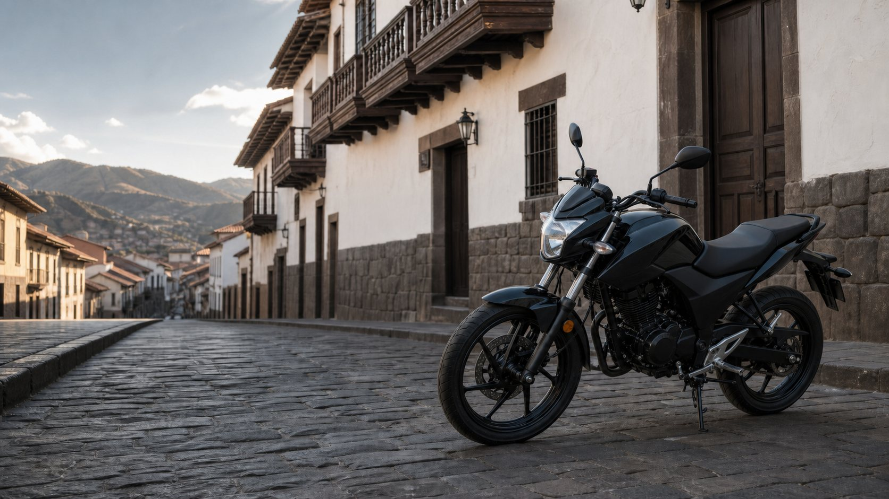
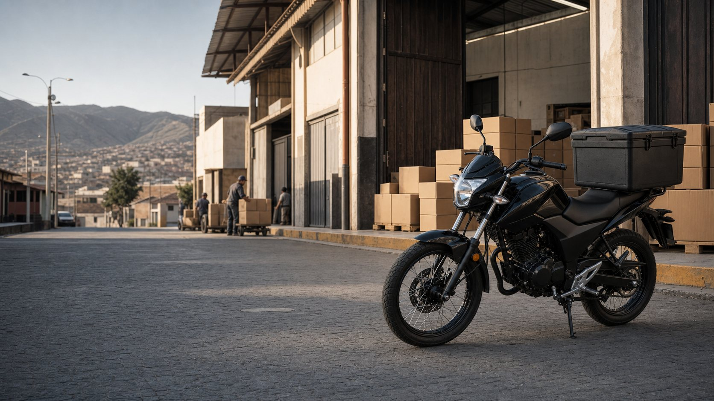
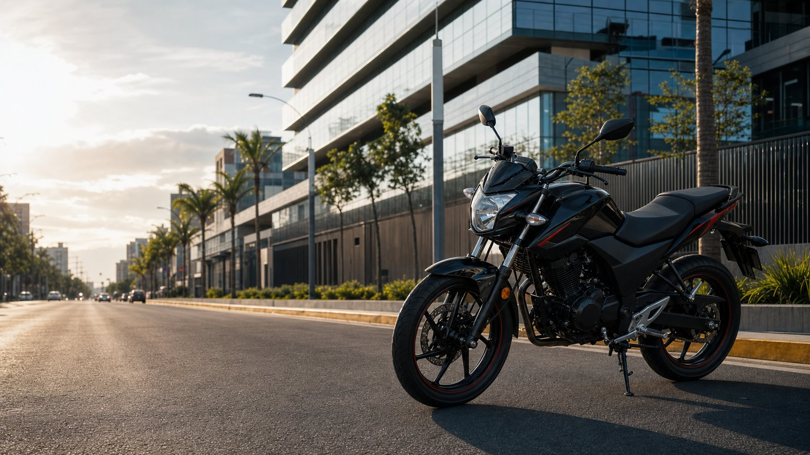
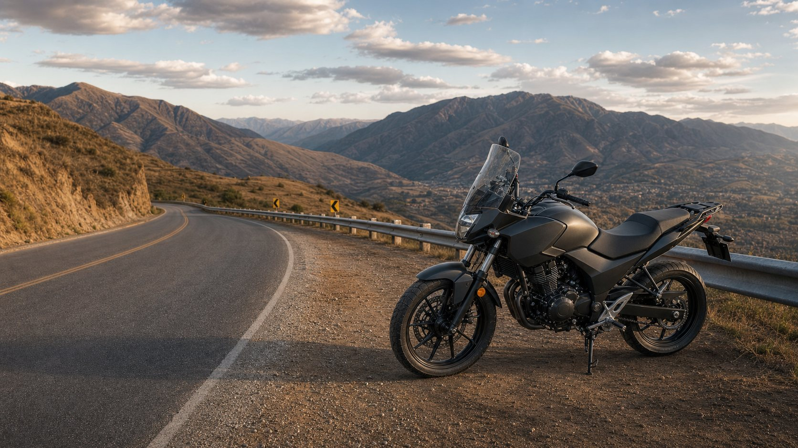
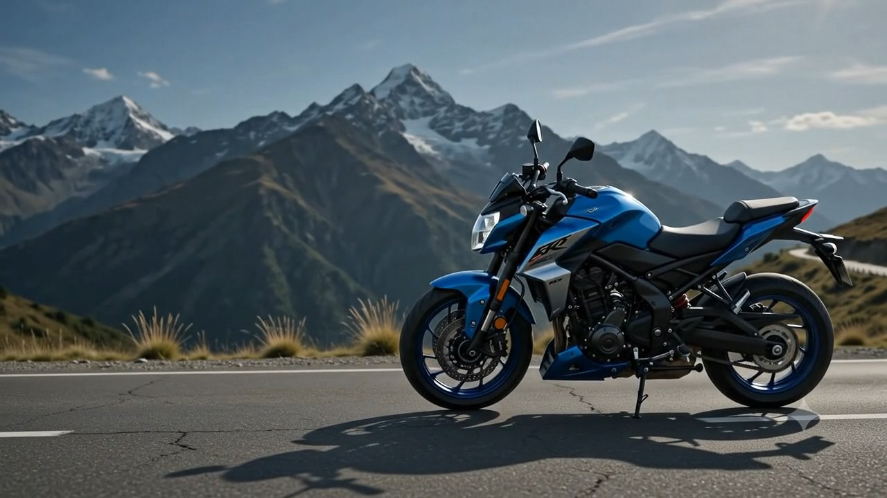

Ciudad
Movilidad ágil para el ritmo de cada día.
Referencias editoriales CT125 · Discover 125 · Pulsar 125 LS · Pulsar N125 FI
Explorar ciudadARENAS
MOTOCICLETAS
Desde la ciudad hasta la ruta andina, encuentra la experiencia que encaje con tu camino.
Cada ruta exige una forma distinta de moverse.

Movilidad ágil para el ritmo de cada día.
Referencias editoriales CT125 · Discover 125 · Pulsar 125 LS · Pulsar N125 FI
Explorar ciudad
Fuerza y resistencia para impulsar cada jornada.
Referencia editorial Boxer 150
Explorar trabajo
Diseño, carácter y rendimiento para destacar en cada ruta.
Referencias editoriales Pulsar 150R · Pulsar 160 NS UG2 · Pulsar N160 FI · Pulsar 180 Neon · Pulsar 200 NS UG2
Explorar deportiva
Potencia y confianza para descubrir nuevos caminos.
Referencias editoriales Pulsar N250 UG · Dominar 250 · Dominar 400 · Pulsar 400 NS
Explorar aventuraTres respuestas bastan para empezar a encontrar tu camino.
Diferentes formas de moverse. Una misma pasión por la ruta.
Una selección breve. El catálogo completo, con todas las categorías y líneas, está a un clic.
Ciudad, trabajo, carretera o montaña. Cada decisión comienza por entender el camino.

Exploramos contigo el uso y el estilo que buscas.
Una trayectoria construida alrededor del mundo de las motocicletas.
Una experiencia clara antes y después de la decisión.
Conocer tus prioridades es el primer paso para elegir mejor.
Una experiencia clara se construye paso a paso.
Prepara tu consulta y descubre el camino que mejor encaja contigo.